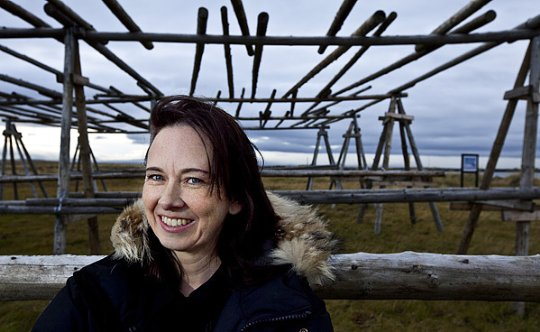
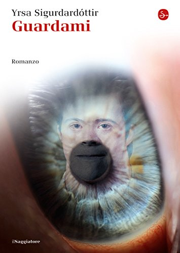

Autore: Yrsa Sigurdardottir
Editore: Sperling & Kupfer
Pagine: 399
Genere: Thriller
Anno Pubblicazione: 2006
Università d'Islanda. In un mattino di fine ottobre, il silenzio del dipartimento di Storia viene lacerato da un grido. Aprendo la porta di uno stanzino, il direttore si vede crollare addosso un cadavere senza occhi e con una runa magica incisa sul petto.
Il corpo è quello di Harald Guntlieb, enigmatico dottorando tedesco con la passione per il cupo periodo della caccia alle streghe. Ma chi era veramente Harald? Per la polizia, che chiude frettolosamente il caso con l'arresto di un piccolo spacciatore, era solo uno stravagante ragazzo ricco in vena di emozioni forti, dalle perversioni sessuali alle modificazioni corporee estreme. Per Matthew Reich, inviato in Islanda dalla famiglia Guntlieb per riaprire le indagini, era uno dei massimi esperti europei di magia nera, grazie a un'inestimabile quanto agghiacciante collezione ereditata dal nonno. Per Thora Gudmundsdottir, l'avvocatessa incaricata di assistere l'affascinante Matthew, era solo un figlio non amato, incamminatosi fra le tenebre per inseguire un miraggio. Non resta dunque che ripercorrere i passi del giovane in un folle labirinto sulle tracce di un libro maledetto, fra antichi sortilegi e moderne rivalità accademiche, per svelare un mistero sempre più tetro, complesso e intrigante.
Un giovane rampollo erede di un'antica famiglia di banchieri tedeschi affascinato dalla storia delle torture alle streghe in Europa viene ritrovato cadavere nel dipartimento di Storia.
Una ricerca universitaria quella di Harald Guntlieb che dalla Germania lo porta in Islanda. Una passione per il macabro e l'oscuro nata grazie al nonno che considerava Harald il suo pupillo.
Una famiglia ricca ma lacerata da un dolore passato, che si scoprirà solo verso la fine anche se intuibile già a metà storia, a causa del quale Harald aveva un rapporto freddo con i genitori.
Il male produce un fascino particolare e trascina un gruppo di studenti bravi ma annoiati ad eseguire dei riti con sesso e droga.
Harald pieno di quella storia che non si trova in “semplici” manuali, segue la scia del male che lo porta fino ad un libro maledetto che vuole avere ad ogni costo.
Un delitto che per la polizia sembra già risolto porta Thora, avvocatessa islandese, assoldata dalla madre della vittima, e Matthew, investigatore tedesco di casa Guntlieb, tra vicoli ciechi e piste da seguire per ricomporre la verità.
In questo libro si conosce il personaggio di Thora, una mamma avvocato divorziata, che deve dividersi tra figli e lavoro.
Una storia avvincente che l'autrice descrive con accuratezza di particolari senza risultare pesante.
Questo thriller è stato considerato da alcuni scontato e noioso, ma a me sinceramente non ha annoiato, anche se l'ho trovato prevedibile a tratti; per questo ho staccato la parte logica e mi son lasciata trasportare dalla scrittura fluida dell'autrice.
L'unica nota negativa è che ho notato certi errori, alcuni forse di distrazione, altri grammaticali.
 L'AUTRICE - Yrsa Sigurdardóttir ha iniziato a scrivere nel 1998 ed è considerata una delle migliori autrici contemporanee di thriller. Sposata con due figli, lavora come ingegnere civile a Reykjavík. Nel 2012 il Saggiatore ha pubblicato il best seller Mi ricordo di te.
Dello stesso autore su THRILLERNORD:
IL LIBRO - Un'inaspettata eruzione vulcanica investe un villaggio di pescatori. La popolazione viene evacuata in tempo, ma gran parte delle case finisce sepolta sotto strati di lava e cenere. 9 luglio 2007.Un progetto archeologico si propone di riportare alla luce alcune delle abitazioni...
 IL LIBRO - Islanda, inverno 2008. Un incendio uccide in modo atroce quattro disabili e il custode della residenza in cui vivevano. Le autorità individuano il colpevole in un ragazzo down che, condannato per aver appiccato il fuoco, viene rinchiuso in un ospedale psichiatrico
IL LIBRO - Il villaggio di Hesteyri nei mesi invernali è disabitato e quasi irraggiungibile. L'unico contatto con il resto dell'Islanda è un traghetto perennemente in balia del vento e del mare. In questo luogo desolato, tre giovani provenienti dalla capitale hanno deciso...
Se siete lettori appassionati visitate questo blog
marisullealidellafantasia.blogspot.it